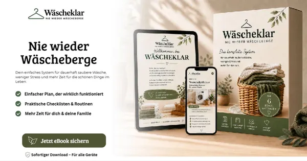

Wäscheklar - Nie wieder Wäscheberge
Produktprofil · Marktplatz-Daten 2026-10-13 · Verkaufsseiten-Recherche 2026-10-13 · Kategorien: Home & Garden
- Wäscheklar - Nie wieder Wäscheberge ist ein/e E-Book in Home & Garden, vertrieben über den Digistore24-Marktplatz von Anbieter demedigital, gelistet seit 2026-08-26.
- Listenpreis $20.80; Digistore24 meldet — Checkout-Konversion, — Stornierungsquote und 50 % Affiliate-Provision.
- Verdienst pro Verkauf (Affiliate): $10.40 (Anbieter-seitige Statistik, keine Prognose).
Interesse an Wäscheklar - Nie wieder Wäscheberge? Aktueller Preis, Boni und Garantiebedingungen finden Sie auf der offiziellen Seite des Anbieters:
Offizielle Verkaufsseite ansehen
Affiliate-Link (Werbung) — wir verdienen ggf. eine Provision, ohne Mehrkosten für Sie.

Marktplatz-Daten
| Produkttyp | E-Book |
|---|---|
| Preis | $20.80 (Single payment) |
| Affiliate-Provision | 50 % |
| Garantie/Rückgabe | Laut Verkaufsseite des Anbieters — vor dem Kauf auf der offiziellen Seite prüfen |
| Anbieter | demedigital (gelistet seit 2026-08-26) |
| Marktplatz-Statistiken* | Checkout-Konversion — · Stornoquote — · Verdienst/Verkauf $10.40 |
* Anbieter-seitige Statistiken von Digistore24; sie hängen von der Traffic-Qualität ab und sind keine Prognose.
Marktplatz-Beschreibung des Anbieters
<h2>⭐ ALLTAGSPROBLEM MIT RIESIGER ZIELGRUPPE!</h2> <h3><strong>WÄSCHEKLAR – Nie wieder Wäscheberge!</strong></h3> <p><strong>Einfaches Produkt. Sofort verständlicher Nutzen. Breite Zielgruppe.</strong></p> <p>Bewirb <strong>Wäscheklar</strong> und sprich Menschen an, die ein Problem kennen, das in Millionen Haushalten immer wieder auftaucht:</p> <p><strong>Zu viel Wäsche. Zu wenig Zeit. Keine funktionierende Routine.</strong></p> <p>Wäscheklar ist ein praxisnaher digitaler Ratgeber, der Schritt für Schritt dabei hilft, aus ständigem Wäschechaos einen <strong>einfachen, strukturierten und alltagstauglichen Ablauf</strong> zu machen.</p> <div><hr /></div> <h3>⭐ <strong>WARUM WÄSCHEKLAR FÜR AFFILIATES INTERESSANT IST</strong></h3> <p>✓ <strong>Extrem leicht verständliches Problem</strong> – kaum Erklärungsbedarf<br />✓ <strong>Breite Zielgruppe</strong> – Singles, Paare, Eltern und Familien<br />✓ <strong>Emotionaler Alltagsschmerz</strong> – Stress, Zeitmangel & überfüllte Wäschekörbe<br />✓ <strong>Direkt verständliche Lösung</strong> – klare Routinen statt komplizierter Systeme<br />✓ Ideal für <strong>TikTok, Instagram, Pinterest, Blogs, Newsletter & Haushalts-Content</strong><br />✓ Zahlreiche Content-Angles rund um <strong>Ordnung, Haushalt, Familie & Zeitersparnis</strong></p> <p><strong>Du musst deiner Zielgruppe nicht erst erklären, warum sie das Problem hat – sie erkennt sich darin wieder.</strong></p> <div><hr /></div> <h3> </h3>
Von der Verkaufsseite des Anbieters
Seitentitel: Wäscheklar – Nie wieder Wäscheberge
Recherche-Methode: rohes HTML · 5 Wörter · Qualität: thin · recherchiert am 2026-10-13. Vollständige Recherche-Datei (MD) ↗
Wie Produkte dieser Art geliefert werden
Allgemeiner Hinweis zu diesem Produkttyp (keine anbieterspezifische Anleitung): E-Books auf Digistore24 werden als digitaler Download geliefert (meist PDF/EPUB): direkt nach dem Checkout erhalten Sie einen Downloadlink oder Mitgliederzugang und können auf jedem Gerät lesen. Für die genaue Anwendung von Wäscheklar - Nie wieder Wäscheberge sind die offizielle Verkaufsseite und die enthaltenen Materialien maßgeblich.
Gut zu wissen
- Keine Garantie-Formulierung in unserer Recherche gefunden — bestätigen Sie das Rückgabefenster auf der offiziellen Seite, bevor Sie kaufen.
- Marktplatz-Zahlen (Preis, Provision, Konversion, Stornoquote) — Quelle: offizielle Digistore24-Marktplatz-API (Affiliate-Sicht), Stand 2026-10-13. Gegenprüfung: Marktplatz-Suche nach Produkt-ID 724373.
- Verkaufsseiten-Zitate — Quelle: https://digikru.de/waescheklar, abgerufen 2026-10-13 (Methode: rohes HTML). Verify: offizielle Seite öffnen.
- Garantie / Rückgabe — vom Anbieter festgelegt; vor dem Kauf auf der Verkaufsseite bestätigen.
- Nicht von uns geprüft: Produktqualität, Ergebnisse, Testimonials — kein Praxistest für dieses Listing durchgeführt.
Häufige Fragen zu Wäscheklar - Nie wieder Wäscheberge
Antworten aus dem Marktplatz-Snapshot (2026-10-13) und der Verkaufsseiten-Recherche (2026-10-13); Anbieteraussagen sind inline gekennzeichnet.
Was ist Wäscheklar - Nie wieder Wäscheberge?
Wäscheklar - Nie wieder Wäscheberge ist ein Angebot des Typs „E-Book" im Digistore24-Marktplatz, Anbieter: demedigital, gelistet seit 2026-08-26. Eingepflegt unter Haus & Garten. Digistore24 wickelt Checkout, Lieferung und Rückgaben ab.
Wie viel kostet Wäscheklar - Nie wieder Wäscheberge?
Der Digistore24-Marktplatz listet es für $20.80 (single payment). Preise legt der Anbieter fest und können sich ändern — der Marktplatz-Eintrag oben zeigt den Schnappschuss; die offizielle Verkaufsseite zeigt den aktuellen Preis.
Gibt es eine Geld-zurück-Garantie für Wäscheklar - Nie wieder Wäscheberge?
Unsere Verkaufsseiten-Recherche hat keine explizite Garantie-Formulierung gefunden. Viele Digistore24-Produkte bieten 60 Tage Geld-zurück, aber das legt jeder Anbieter selbst fest — bestätigen Sie es auf der offiziellen Verkaufsseite, bevor Sie kaufen.
Ist Wäscheklar - Nie wieder Wäscheberge seriös?
Wir bewerten keine Seriosität — wir veröffentlichen überprüfbare Zahlen: Anbieter demedigital (gelistet seit 2026-08-26), Checkout-Konversion —, Stornoquote —, Affiliate-Verdienst/Verkauf $10.40 (alles Anbieter-seitige Marktplatz-Statistiken). Lesen Sie unsere 6-Punkte-Bewertungsmethode und entscheiden Sie anhand der Zahlen — oder diskutieren Sie Wäscheklar - Nie wieder Wäscheberge auf GitHub.
Wo kann ich Wäscheklar - Nie wieder Wäscheberge sicher kaufen?
Nur über die offizielle Verkaufsseite, die auf dieser Seite verlinkt ist (Checkout und Rückgaben laufen über Digistore24). Prüfen Sie dort Preis und Garantie vor der Bestellung. Der Link ist ein Affiliate-Link — der Kauf unterstützt diese Website ohne Mehrkosten für Sie.
Wie erhalte ich Wäscheklar - Nie wieder Wäscheberge nach der Zahlung?
Der Checkout läuft über Digistore24: Nach der Zahlung erhalten Sie Ihren Zugang oder Download per E-Mail und in Ihrem Digistore24-Kundenkonto. Lieferdetails für diesen Produkttyp: E-Books auf Digistore24 werden als digitaler Download geliefert (meist PDF/EPUB): direkt nach dem Checkout erhalten Sie einen Downloadlink oder Mitgliederzugang und können auf jedem Gerät lesen. Bei Problemen kann der Digistore24-Käufersupport Ihre Bestellung wiederherstellen.
Alle 50 Käuferfragen zu Haus & Garten — das komplette Kategorie-FAQ.
Wäscheklar - Nie wieder Wäscheberge auf Reddit diskutieren
In Community-Threads vergleichen echte Käufer Erfahrungen. Wir verlinken Communities, keine einzelnen Posts — Threads verschwinden, Subreddits bleiben:
- Reddit-Suche nach „Wäscheklar - Nie wieder Wäscheberge" — Live-Ergebnisse, von uns nicht beeinflusst.
- Top-„Erfahrungs"-Treffer dieses Jahr — selbst nach Aktualität filtern.
Passendes auf Amazon.de
Physische Produkte und Zubehör, die häufig zusammen mit Wäscheklar - Nie wieder Wäscheberge gekauft werden:
- Gartenwerkzeug auf Amazon.de — Top-Ergebnisse, Amazon-Ranking.
- Bestseller: Gartenwerkzeug — live Liste von Amazon, von uns nicht kuratiert.
Werbung: Als Amazon-Partner verdient DigistorePicks DE an qualifizierten Käufen (Partner-tag adminstorede-21). Amazon setzt eigene Preise und Provisionen (niedrige einstellige Prozente — weit unter den 30–75% der Digistore24-Anbieter). Amazon ist ein Convenience-Angebot für Sachprodukte, kein Ersatz für das digitale Produkt oben.
Ähnliche Angebote in Haus & Garten

<p><strong>Ideales Partnerprogramm für JEDEN aus der Immobilienbranche. <br /></strong><em>Erhalte 20% Provision beim Verkauf von
<blockquote> <blockquote> <p>Verdien 190 Euro netto pro Sale in der unentdecktesten Nische des Jahres!</p> <p>Bist du genervt von

<h2>MIETfrei – löst großes gesellschaftliches Problem vieler Menschen in Deutschland</h2> <ul> <li style="list-style-type:none;"&

<p>Feng Shui Online-Kurs</p> <p><strong>Entspannt wohnen – entspannt sein </strong></p> <p>Feng Shui, das Jahrtausend
Ähnliche Preislage in Haus & Garten

<p>Ihre Zielgruppe beschäftigt sich mit Hauskauf, Altbausanierung oder energetischer Modernisierung? Dann empfehlen Sie einen Ratgeber, der bei einer konk

<h2><strong>Homöopathie Für Pflanzen</strong></h2> <p>Unlock natural plant care with Homöopathie Für Pflanzen, a practical e-book

<p>Bewirb „Küstenstil neu gedacht – Mit Feng Shui zu mehr Ruhe und Wohlbefinden“ und inspiriere deine Zielgruppe zu einem harmonischen Zuhause mit entspan

<p>Bewirb „Der Weg zum Traumhaus“ und begleite deine Zielgruppe Schritt für Schritt auf dem Weg ins eigene Zuhause. Der digitale Leitfaden unterstützt bei
Ähnliche Suchanfragen
Wo Sie es sich ansehen können
Wo Sie es sich ansehen können
Aktuelle Preise, Garantie und Boni finden Sie auf der offiziellen Verkaufsseite:
Offizielle Verkaufsseite ansehen
Das ist ein Affiliate-Link (Werbung) — kaufen Sie darüber, verdienen wir ggf. eine Provision, ohne Mehrkosten für Sie.
Quellen & weiterführende Informationen
- Offizielle Verkaufsseite (aktueller Preis, Garantie, Boni): digikru.de/waescheklar (Affiliate-Link)
- Öffentliche Digistore24-Produktseite: digistore24.com/product/724373
- Vollständige Recherche-Datei (Markdown, versioniert): content/products/58687-w-scheklar-nie-wieder-w-scheberge.md
- Marktplatz-Kategorie: Haus & Garten
Wie wir Produkte wie Wäscheklar - Nie wieder Wäscheberge bewerten
Sechs Prüfungen, ausschließlich mit offiziellen Marktplatz-Zahlen. Die vollständige Bewertungsmethode lesen · unsere Recherche-Standards & Kennzeichnung.
Fragen oder eigene Erfahrungen mit Wäscheklar - Nie wieder Wäscheberge?
Praxis-Tests veröffentlichen wir erst, nachdem wir ein Produkt selbst gekauft haben — aber Ihre Erfahrung hilft anderen Lesern: Diskussion zu Wäscheklar - Nie wieder Wäscheberge auf GitHub starten/verfolgen. Falsche Zahl gefunden? Korrektur melden — jede Seite zeigt ihre Datenstände, Korrekturen gelten für die ganze Website.